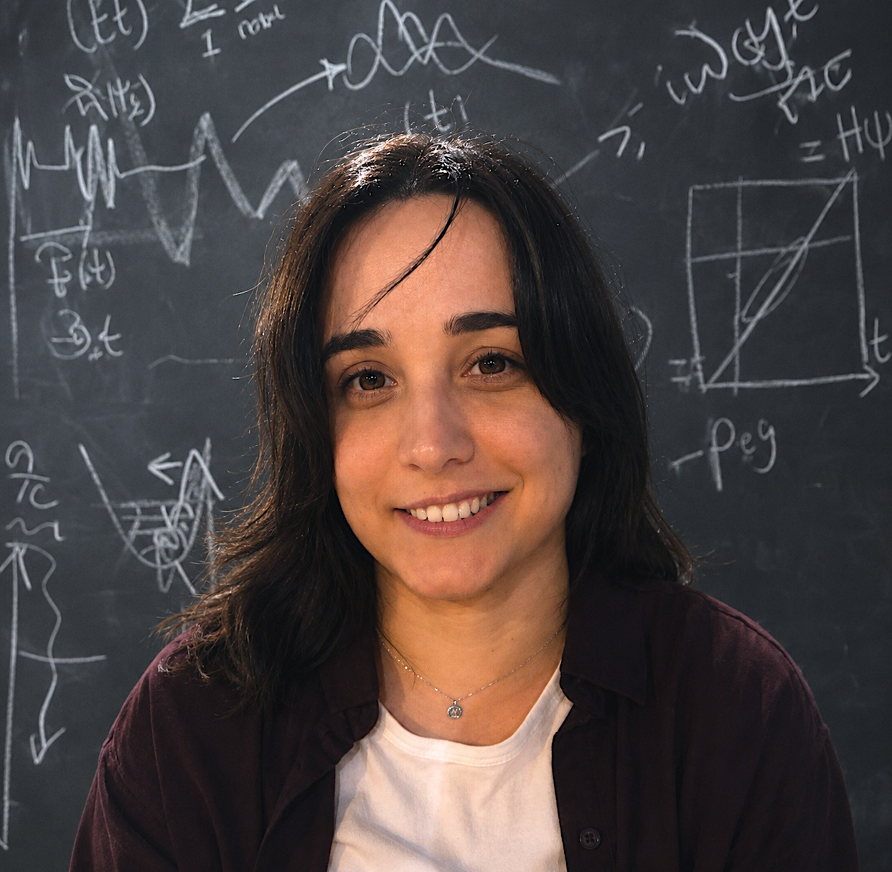

Ultrafast quantum dynamics
Photoinduced molecular dynamics, nonadiabatic processes, vibronic wavepackets and energy/information transfer.
MOLECULAR QUANTUM SCIENCE · ULTRAFAST PHYSICS
I develop theoretical and computational approaches to understand, simulate and control molecular quantum dynamics at ultrafast timescales — building independent research directions at the interface of spectroscopy, coherent control and molecular .
Postdoctoral Researcher · CNRS · CEISAM

My research sits at the interface of molecular quantum dynamics, nonlinear optical spectroscopy and coherent control. I develop methods that go beyond conventional perturbative descriptions of light–matter interaction, explicitly incorporating strong and shaped laser fields, environmental dissipation and molecular complexity.
Photoinduced molecular dynamics, nonadiabatic processes, vibronic wavepackets and energy/information transfer.
Time-resolved nonlinear spectroscopy beyond response-function expansions, including explicit finite-pulse effects.
First-principles descriptions of environmental disorder, decoherence and open-system dynamics across scales.
Optimal control and pulse shaping to manipulate molecular populations, coherences and nonadiabatic dynamics.
Exploring vibronic molecular systems towards information applications.
TDDFT, molecular dynamics, multiscale quantum/classical approaches and computational spectroscopy.
A central direction of my independent research is to exploit molecular vibronic structure as a resource for processing. The concept treats accessible vibronic manifolds as controllable, measurable and potentially high-dimensional quantum units, operating on femtosecond timescales before environmental dissipation dominates.
The programme combines optimal pulse shaping, first-principles dissipative modelling, advanced spectroscopy and spectroscopic quantum tomography.
14 peer-reviewed publications are listed below, spanning non-perturbative spectroscopy, molecular quantum dynamics, coherent control and dissipative systems.
X. Xu, R. Hildner & E. Palacino-González · J. Chem. Phys. 163, 174903
DOI ↗R. Strich, S. Faraji & E. Palacino-González · Phys. Chem. Chem. Phys. 27, 18525–18538
DOI ↗E. Palacino-González & D. Picconi · Book chapter, EDP Sciences
DOI ↗D. Picconi, M. F. S. J. Menger, E. Palacino-González, E. Salazar & S. Faraji · PCCP 27, 19105–19122
DOI ↗J. H. Soh, T. L. C. Jansen & E. Palacino-González · J. Chem. Phys. 160, 024110
DOI ↗S. Faraji, D. Picconi & E. Palacino-González · WIREs Comput. Mol. Sci. 14
DOI ↗Y. Qiang, K. Sun, E. Palacino-González et al. · J. Chem. Phys. 160, 054107
DOI ↗E. Palacino-González & T. L. C. Jansen · J. Phys. Chem. C 127, 6793–6801
DOI ↗M. F. Gelin, E. Palacino-González, L. Chen & W. Domcke · Molecules 24, 231
DOI ↗E. Palacino-González, M. F. Gelin & W. Domcke · J. Chem. Phys. 150, 204102
DOI ↗E. Palacino-González, M. F. Gelin & W. Domcke · PCCP 19, 32296–32306
DOI ↗E. Palacino-González, M. F. Gelin & W. Domcke · PCCP 19, 32307–32319
DOI ↗L. Chen, E. Palacino-González, M. F. Gelin & W. Domcke · J. Chem. Phys. 147, 234104
DOI ↗E. Palacino-González · submitted
For the most current publication and citation record, see ResearchGate or ORCID.
CAREER TRAJECTORY
My research career has developed across leading theoretical and experimental environments in Germany, the Netherlands, the UK and France, with a continuous focus on ultrafast molecular dynamics, nonlinear spectroscopy and coherent control.
I began my scientific trajectory in theoretical chemistry at the Technical University of Munich (TUM), where I completed my PhD in Theoretical Chemistry under the supervision of Prof. Wolfgang Domcke and Prof. Maxim Gelin, now at Hangzhou Dianzi University. My doctoral research focused on molecular optical physics, nonlinear time-resolved spectroscopy and the theoretical description of ultrafast molecular dynamics.
During the PhD I was part of the International Max Planck Research School for Advanced Photon Science (IMPRS-APS), an Excellence Doctoral Programme of the Max Planck Society. I was awarded the IMPRS-APS Doctoral Excellence Fellowship through international competitive selection.
After the PhD, I moved to the Max-Born Institute for Nonlinear Optics and Short-Pulse Spectroscopy in Berlin, where I worked on ultrafast spectroscopy and dissipative molecular dynamics. In 2021, I secured a highly competitive Marie Skłodowska-Curie Individual Fellowship (MSCA-IF) from the European Commission and developed my own postdoctoral research project at the University of Groningen.
Since then, my work has expanded through collaborations with experimental and theoretical groups, including researchers in ultrafast nonlinear optical spectroscopy, molecular materials, quantum dynamics and coherent control. I have built an international network spanning theory and experiment, while developing my own research directions and supervising students across different scientific backgrounds.
Research on molecular quantum dynamics, ultrafast spectroscopy and theoretical approaches to light–matter interaction.
Visiting research period focused on ultrafast spectroscopy and collaborative work at the theory–experiment interface.
Developed research on dissipative molecular dynamics, coherent control and pulse-shaping approaches, alongside student supervision and teaching.
Extended my work on ultrafast spectroscopy and molecular materials through theory–experiment collaborations.
Competitively secured ~€175k MSCA-IF funding to develop the REPAMPS project on engineering electronic properties of artificial energy materials with multi-pulse spectroscopy.
Research on ultrafast spectroscopy, molecular dynamics and dissipative quantum processes.
PhD in Molecular Optical Physics under Prof. Wolfgang Domcke and Prof. Maxim Gelin. IMPRS-APS Doctoral Excellence Fellowship awarded by the Max Planck Society (~€50k).
Programme coordinator, course coordinator, curriculum developer and lecturer across three institutions, with teaching experience spanning quantum mechanics, nonlinear optics, molecular photonics, quantum chemistry and computational methods.
For collaborations, seminars, scientific discussions or research opportunities, please get in touch through one of the academic profiles below.